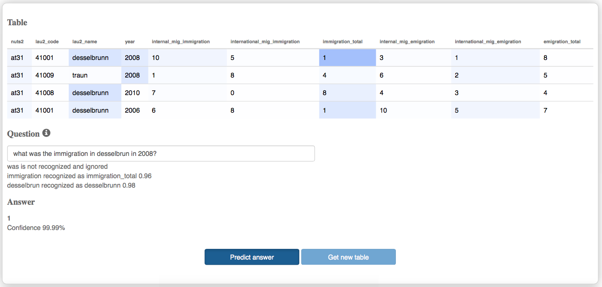

Tabular data is difficult to analyze and to search through, yielding for new tools and interfaces that would allow even non tech-savvy users to gain insights from open datasets without resorting to specialized data analysis tools and without having to fully understand the dataset structure. The goal of our demonstration is to showcase answering natural language questions from tabular data, and to discuss related system configuration and model training aspects. Our prototype is publicly available and open-sourced (see demo)
There is an abundance of tabular data on the web in the form of Open Data tables, which are regularly released by many national governments. Providing their data free of charge, publishing bodies seldom have dedicated resources to support the end users in finding and using it. In many open data portals the search facility remains limited: e.g., no search in the content of data tables is supported.
We attempt to remedy this situation through development of the information retrieval tools tailored specifically to the end users without technical background. Our Open Data Assistant chatbot offers an unconventional interface for cross-lingual data search via Facebook and Skype messaging applications enabling a quick overview of the available datasets collected from various open data portals. However, the current version of the chatbot supports only metadata-based search. In this paper, we work towards extending the chatbot to search within the content of open data tables and answering specific user questions using the values from these tables.
The architecture of our system for table-based question answering is summarized in Figure . Each of the individual components is described in further details below.
Row1 |
City |
Klagenfurt |
Row1 |
Immigration |
110 |
Row1 |
Emigration |
140 |
Row2 |
City |
Salzburg |
Row2 |
Immigration |
170 |
Row2 |
Emigration |
100 |
Question: What is the immigration in Salzburg?
Answer: 170
Our method for question answering from tables is based on the End-To-End Memory Network architecture , which we employ to transform the natural-language questions into the table lookups. Memory Network is a recurrent neural network (RNN) trained to predict the correct answer by combining continuous representations of an input table and a question. It consists of a sequence of memory layers (3 layers in our experiments) that allow to go over the content of the input table several times and perform reasoning in multiple steps.
The data samples for training and testing are fed in batches (batch size is 32 in our experiments). Each of the data samples consists of the input table, a question and the correct answer that corresponds to one of the cells in the input table.
The input tables, questions and answers are embedded into a vector space using a bag-of-words models, which neglects the ordering of words. We found this approach efficient to work on our training data, since the vocabulary for column headers and cell values are disjoint. In the future work we consider also evaluating the added value of switching to the positional encoding on the real world data as reported in . The output layer generates the predicted answer to the input question and is implemented as a softmax function in the size of the vocabulary, i.e. it outputs the probability distribution over all possible answers, which could be any of the table cells.
The network is trained using stochastic gradient descent with linear start to avoid the local minima as in . The objective function is to minimize the cross-entropy loss between the predicted answer and the true answer from the training set.

Since users may refer to the columns with words that differ from the labels used in the table headings, we employ a fastText model pretrained on Wikipedia to compute similarity between the out-of-vocabulary (OOV) words from the user query and the words in our vocabulary, i.e. to align or ground the query in the local representation. The similarity is computed as a cosine-similarity between the word vectors embedded using the pretrained fastText model.
fastText provides continuous word representation, which reflects semantic similarity using both the word co-occurrence statistics and the sub-word-based similarity via the character n-grams. For each of the OOV words the query disambiguation module picks the most similar word from the vocabulary at query time and uses its embedding instead.
In our scenario this approach is particularly useful to match the paraphrases of the column headings, e.g., the word
This work was supported by the Austrian Research Promotion Agency (FFG) under the project CommuniData (grant no. 855407). The work of Svitlana Vakulenko has received funding from the EU H2020 programme under the MSCA-RISE agreement 645751 (RISE_BPM).
Piotr Bojanowski, Edouard Grave, Armand Joulin, and Tomas Mikolov. 2016. Enriching word vectors with subword information. arXiv preprint arXiv:1607.04606. https://arxiv.org/abs/1607.04606.pdf
Arvind Neelakantan, Quoc V. Le, Martín Abadi, Andrew McCallum, and Dario Amodei. 2016. Learning a natural language interface with neural programmer. CoRR abs/1611.08945. http://arxiv.org/abs/1611.08945
Sebastian Neumaier, Vadim Savenkov, and Svitlana Vakulenko. 2017. Talking open data. In 14th Extended Semantic Web Conference, ESWC 2017, Portoroz, Slovenia, May 28 - June 1, 2017. https://arxiv.org/abs/1705.00894.pdf
Sainbayar Sukhbaatar, Arthur Szlam, Jason Weston, and Rob Fergus. 2015. End-to-end memory networks. In Advances in Neural Information Processing Systems 28: Annual Conference on Neural Information Processing Systems 2015, December 7- 12, 2015, Montreal, Quebec, Canada. pages 2440– 2448. http://papers.nips.cc/paper/5846-end-to-end-memory-networks.
Huan Sun, Hao Ma, Xiaodong He, Wen-tau Yih, Yu Su, and Xifeng Yan. 2016. Table cell search for question answering. In Proceedings of the 25th International Conference on World Wide Web, WWW 2016, Montreal, Canada, April 11 - 15, 2016. pages 771– 782. https://doi.org/10.1145/2872427.2883080.
Jason Weston, Antoine Bordes, Sumit Chopra, and Tomas Mikolov. 2015. Towards AI-complete question answering: A set of prerequisite toy tasks. CoRR abs/1502.05698. http://arxiv.org/abs/1502.05698.
Pengcheng Yin, Zhengdong Lu, Hang Li, and Ben Kao. 2016. Neural enquirer: Learning to query tables in natural language. In Proceedings of the Twenty-Fifth International Joint Conference on Arti cial Intelligence, IJCAI 2016, New York, NY, USA, 9-15 July 2016. pages 2308–2314. http://www.ijcai.org/Abstract/16/329.
Implementation based on MemN2N-babi-python